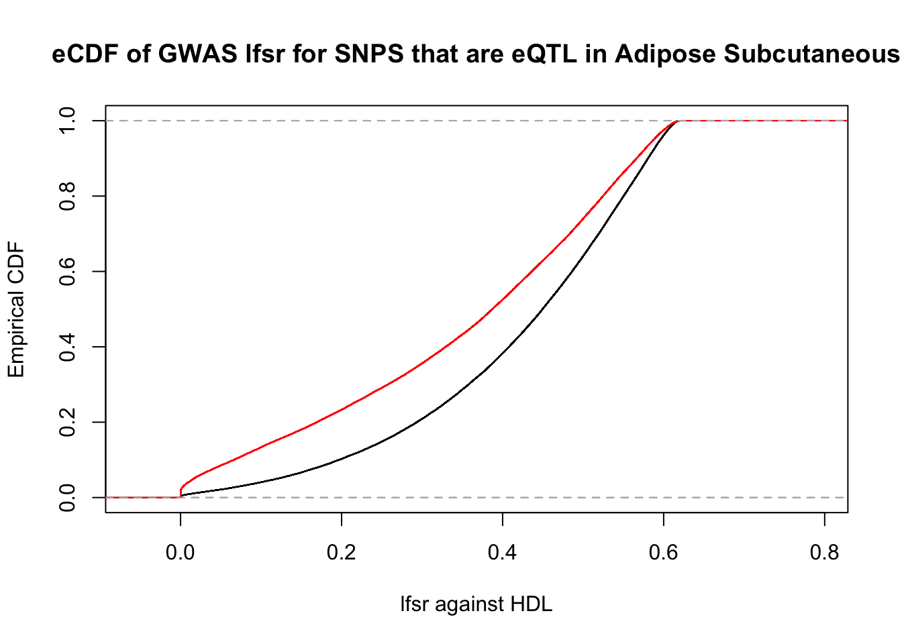
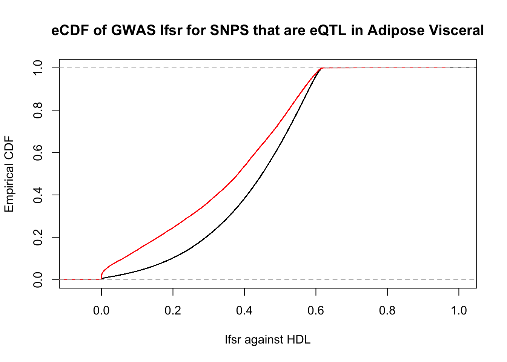
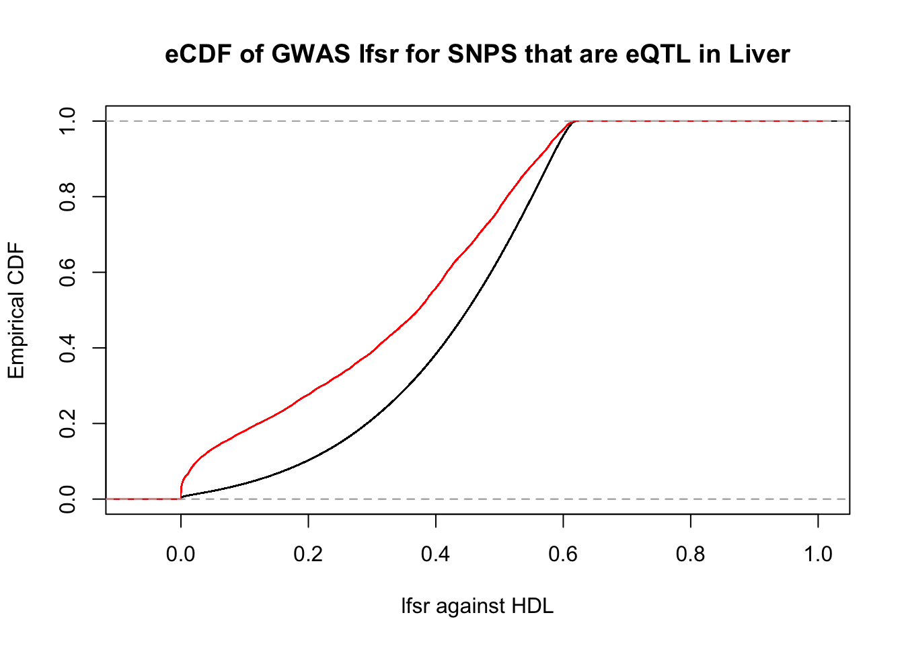
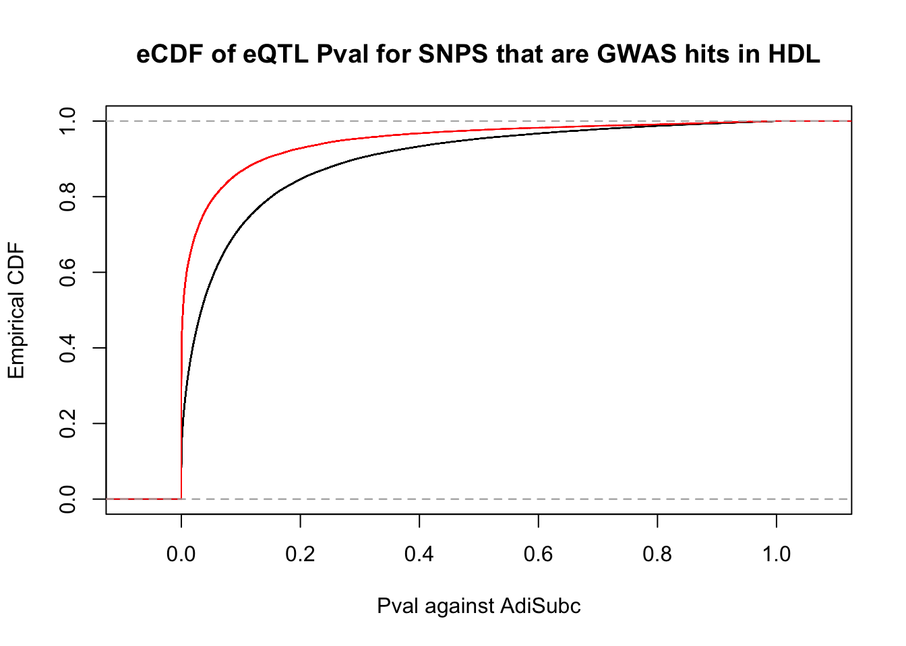
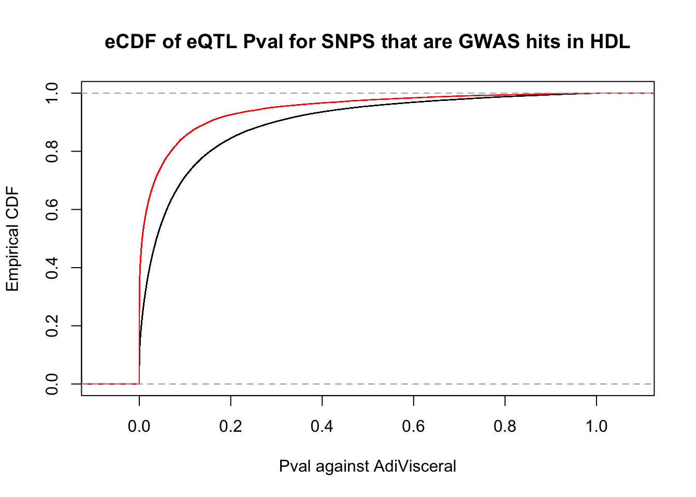
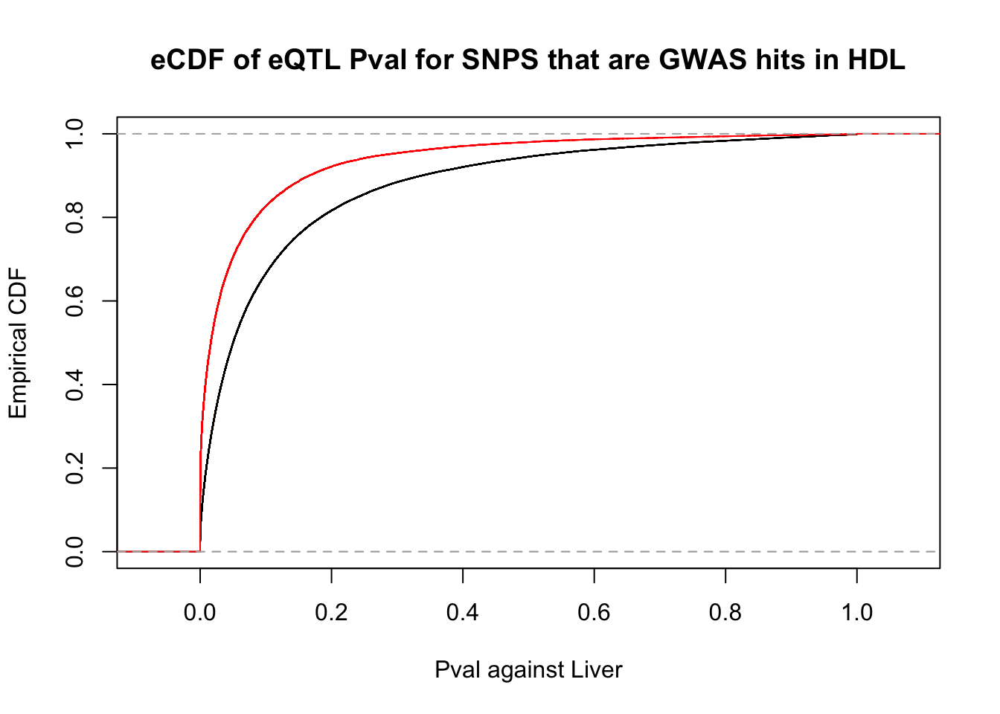

Last updated: 2020-04-27
Checks: 6 1
Knit directory: lipids_mvp/
This reproducible R Markdown analysis was created with workflowr (version 1.6.1). The Checks tab describes the reproducibility checks that were applied when the results were created. The Past versions tab lists the development history.
The R Markdown file has unstaged changes. To know which version of the R Markdown file created these results, you’ll want to first commit it to the Git repo. If you’re still working on the analysis, you can ignore this warning. When you’re finished, you can run wflow_publish to commit the R Markdown file and build the HTML.
Great job! The global environment was empty. Objects defined in the global environment can affect the analysis in your R Markdown file in unknown ways. For reproduciblity it’s best to always run the code in an empty environment.
The command set.seed(20190925) was run prior to running the code in the R Markdown file. Setting a seed ensures that any results that rely on randomness, e.g. subsampling or permutations, are reproducible.
Great job! Recording the operating system, R version, and package versions is critical for reproducibility.
Nice! There were no cached chunks for this analysis, so you can be confident that you successfully produced the results during this run.
Great job! Using relative paths to the files within your workflowr project makes it easier to run your code on other machines.
Great! You are using Git for version control. Tracking code development and connecting the code version to the results is critical for reproducibility.
The results in this page were generated with repository version 220be32. See the Past versions tab to see a history of the changes made to the R Markdown and HTML files.
Note that you need to be careful to ensure that all relevant files for the analysis have been committed to Git prior to generating the results (you can use wflow_publish or wflow_git_commit). workflowr only checks the R Markdown file, but you know if there are other scripts or data files that it depends on. Below is the status of the Git repository when the results were generated:
Ignored files:
Ignored: .DS_Store
Ignored: .Rapp.history
Ignored: .Rhistory
Ignored: analysis/.DS_Store
Ignored: analysis/.Rhistory
Ignored: analysis/analysingrepro.nb.html
Ignored: analysis/looking_at_significance.nb.html
Ignored: analysis/looking_at_significance_cache/
Ignored: analysis/simualtions.nb.html
Ignored: analysis/simulations.nb.html
Ignored: analysis/workingwithdata.nb.html
Ignored: analysis/workingwithdata_cache/
Ignored: scripts/.Rapp.history
Unstaged changes:
Modified: analysis/eCDF.Rmd
Note that any generated files, e.g. HTML, png, CSS, etc., are not included in this status report because it is ok for generated content to have uncommitted changes.
These are the previous versions of the repository in which changes were made to the R Markdown (analysis/eCDF.Rmd) and HTML (docs/eCDF.html) files. If you’ve configured a remote Git repository (see ?wflow_git_remote), click on the hyperlinks in the table below to view the files as they were in that past version.
| File | Version | Author | Date | Message |
|---|---|---|---|---|
| Rmd | 220be32 | Sarah Urbut | 2020-04-26 | update |
| html | 220be32 | Sarah Urbut | 2020-04-26 | update |
| Rmd | 4af58e0 | Sarah Urbut | 2020-04-26 | update |
| html | 4af58e0 | Sarah Urbut | 2020-04-26 | update |
| html | 3653de2 | Sarah Urbut | 2020-04-26 | Update |
| html | 2512e57 | Sarah Urbut | 2020-04-26 | Build site. |
| Rmd | 0df664a | Sarah Urbut | 2020-04-26 | wflow_publish(“~/lipids_mvp/analysis/eCDF.Rmd”) |
We can consider if there is an enrichment of low lfsr GWAS hits for SNPS that are considered significant in an eQTL analysis (at a low p value threshold for example) and similarly, we can consider if there is an enrichment of low p-vals among SNPS interrogated against gene expression that are considered significant in a GWAS associations.
First we consider finding SNPS that are significant in GTEx as eQTLs and interrogating equivlanet SNPs in the GWAS analysis:
load("~/Downloads/AllHDLmerged_filtered_11M.RData")
subcut=which(AdipSubHDL_11M_filtered$pval_nominal<5e-8)##These SNPS were significant at nominal pval threshold of 5e-8
#s=sample(nrow(AdipSubHDL_11M_filtered),1e5)### randomly chosen SNPS (to thin plot)
plot(ecdf(x =abs(AdipSubHDL_11M_filtered$lfsr)),ylab = "Empirical CDF",xlab="lfsr against HDL",main="eCDF of GWAS lfsr for SNPS that are eQTL in Adipose Subcutaneous")
lines(ecdf(x =abs(AdipSubHDL_11M_filtered$lfsr[subcut])),col="Red")
| Version | Author | Date |
|---|---|---|
| 4af58e0 | Sarah Urbut | 2020-04-26 |
#########
visc=which(AdipVisHDL_11M_filtered$pval_nominal<5e-8)##These SNPS were significant at nominal pval threshold of 5e-8
#s=sample(nrow(AdipVisHDL_11M_filtered),1e5)### randomly chosen SNPS (to thin plot)
plot(ecdf(x =abs(AdipVisHDL_11M_filtered$lfsr)),ylab = "Empirical CDF",xlab="lfsr against HDL",main="eCDF of GWAS lfsr for SNPS that are eQTL in Adipose Visceral")
lines(ecdf(x =abs(AdipVisHDL_11M_filtered$lfsr[visc])),col="Red")
| Version | Author | Date |
|---|---|---|
| 4af58e0 | Sarah Urbut | 2020-04-26 |
#####
liver=which(LiverHDL_11M_filtered$pval_nominal<5e-8)##These SNPS were significant at nominal pval threshold of 5e-8
#s=sample(nrow(LiverHDL_11M_filtered),1e5)### randomly chosen SNPS (to thin plot)
plot(ecdf(x =abs(LiverHDL_11M_filtered$lfsr)),ylab = "Empirical CDF",xlab="lfsr against HDL",main="eCDF of GWAS lfsr for SNPS that are eQTL in Liver")
lines(ecdf(x =abs(LiverHDL_11M_filtered$lfsr[liver])),col="Red")
| Version | Author | Date |
|---|---|---|
| 4af58e0 | Sarah Urbut | 2020-04-26 |
Now, let’s do the opposite: find SNPs called significant in GWAS and see how their eQTL effects are distributed:
subcut=which(AdipSubHDL_11M_filtered$lfsr<5e-2)##These SNPS were significant at nominal pval threshold of 5e-8
plot(ecdf(x =abs(AdipSubHDL_11M_filtered$pval_nominal)),ylab = "Empirical CDF",xlab="Pval against AdiSubc",main="eCDF of eQTL Pval for SNPS that are GWAS hits in HDL")
lines(ecdf(x =abs(AdipSubHDL_11M_filtered$pval_nominal[subcut])),col="Red")
| Version | Author | Date |
|---|---|---|
| 4af58e0 | Sarah Urbut | 2020-04-26 |
#########
visc=which(AdipVisHDL_11M_filtered$lfsr<5e-2)##These SNPS were significant at nominal pval threshold of 5e-8
plot(ecdf(x =abs(AdipVisHDL_11M_filtered$pval_nominal)),ylab = "Empirical CDF",xlab="Pval against AdiVisceral",main="eCDF of eQTL Pval for SNPS that are GWAS hits in HDL")
lines(ecdf(x =abs(AdipVisHDL_11M_filtered$pval_nominal[visc])),col="Red")
| Version | Author | Date |
|---|---|---|
| 4af58e0 | Sarah Urbut | 2020-04-26 |
#####
liver=which(LiverHDL_11M_filtered$lfsr<5e-2)##These SNPS were significant at nominal pval threshold of 5e-8
plot(ecdf(x =abs(LiverHDL_11M_filtered$pval_nominal)),ylab = "Empirical CDF",xlab="Pval against Liver",main="eCDF of eQTL Pval for SNPS that are GWAS hits in HDL")
lines(ecdf(x =abs(LiverHDL_11M_filtered$pval_nominal[liver])),col="Red")
| Version | Author | Date |
|---|---|---|
| 4af58e0 | Sarah Urbut | 2020-04-26 |
sessionInfo()R version 3.6.3 (2020-02-29)
Platform: x86_64-apple-darwin15.6.0 (64-bit)
Running under: macOS Catalina 10.15.4
Matrix products: default
BLAS: /Library/Frameworks/R.framework/Versions/3.6/Resources/lib/libRblas.0.dylib
LAPACK: /Library/Frameworks/R.framework/Versions/3.6/Resources/lib/libRlapack.dylib
locale:
[1] en_US.UTF-8/en_US.UTF-8/en_US.UTF-8/C/en_US.UTF-8/en_US.UTF-8
attached base packages:
[1] stats graphics grDevices utils datasets methods base
loaded via a namespace (and not attached):
[1] workflowr_1.6.1 Rcpp_1.0.4.8 rprojroot_1.3-2 digest_0.6.25
[5] later_1.0.0 R6_2.4.1 backports_1.1.6 git2r_0.26.1
[9] magrittr_1.5 evaluate_0.14 stringi_1.4.6 rlang_0.4.5
[13] fs_1.4.1 promises_1.1.0 whisker_0.4 rmarkdown_2.1
[17] tools_3.6.3 stringr_1.4.0 glue_1.4.0 httpuv_1.5.2
[21] xfun_0.13 yaml_2.2.1 compiler_3.6.3 htmltools_0.4.0
[25] knitr_1.28